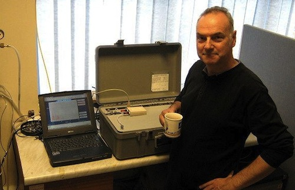

dorkbot anglia six
The sixth meeting of dorkbot anglia, took place on Thursday 30th June 2011, when we were the guests of the Smiths Row Gallery at Bury St Edmunds. An audience of over thirty people enjoyed an evening of talks and conversations with "people doing strange things with electricity" in the East Anglian area. The evening was introduced by John Bowers of the Curiosity Collective.
Rosie Grieve is the curator at the Smiths Row Gallery and described a selection of their recent exhibitions. The latest show - Into the Wild, explores notions of wilderness and reflects Rosie's own return to rural Suffolk, having lived in the city for years. In addition to Lee Patterson's recording, to which we will return, Jai Redman exhited we are extInked a series of one hundred pen and ink drawings of rare and threatened species. Each had previously been tattooed to one hundred volunteers, who have now adopted the role of ambassador for their species. Another recent highlight at the gallery was Sweet Sweet Galaxy a gigantic and intricate sugar sculpture, made from bags of sugar donated by the local British Sugar factory.

Next Fraser Reich enthused us about mass spectrometers and the world of olfactory. He described how the technology had progressively shrunk in recent years, from something room-sized to being small and light enough to fit into a suitcase. Fraser works for Kore Technology in Ely and demonstrated their latest design the MS-200, which correctly identified orange peel, using an electronic catalogue of smells.

Lee Patterson is a sound artist who makes recordings of nature using homemade contact microphones and hydrophones. At the Into the Wild show he was playing his underwater recordings of plant and insect life, including the strange sound of pond weed. As a demonstration Lee mic'ed-up peanuts and proceeded to set them alight to reveal their hidden sonic properties!

Anton Woodward then told us all about his work in stage automation equipment for theatre and film for projects. His company AVW Controls is based in Diss and works international for clients including the Phantom of the Opera, the National Theatre and the Harry Potter films. As Anton puts it, "Stage automation is the appliance of imagination, technology and effort to move stage machinery by electronic motion control systems." The results are enormous machines orchestrating complex and often beautiful movements of large stage equipment, right on cue.
dorkbot encourages grassroots meetings of artists, engineers, designers, scientists, inventors and anyone else working under the very broad umbrella of electronic art. Started by Douglas Repetto at Columbia University in 2000, dorkbot is now global in almost 100 cities; dorkbot anglia is one of the newest.
Our intention is for dorkbot anglia to run every two or three months in a different town in the region. If you would like to participate or could offer a venue, please get in touch -
Please join the mailing-lists: the announce list for our monthly announcements and a blabber list for open discussion. You can also follow our tweets via twitter and find the event on facebook.